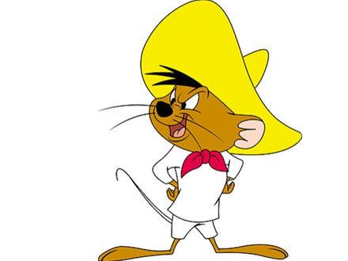

<!-- <!DOCTYPE html>
<html>
<head>
	<title></title>
	<link rel="stylesheet" type="text/css" href="css/about.css">
    <link rel="stylesheet" type="text/css" href="css/normalize.css" > 
	<link rel="stylesheet" href="https://cdnjs.cloudflare.com/ajax/libs/font-awesome/4.7.0/css/font-awesome.min.css">
	<meta name="viewport" content="width=device-width, initial-scale=1.0">
	   	
</head>

<body>

	<ul class="main">
		<li> <a href="index.html"> Home</a></li>
		<li> <a href="indesign.html"> About me</a></li>
		<li> <a href="illustrator.html"> projects</a></li>
		<li> <a href="photoshop.html"> photo</a></li>
		
	</ul>
	<div class="a"></div>
	<h3>About myself</h3>

	<div class="judy">
		>
		<p>
			
			Evelyne is a current student of Graphic design from Akirachix,looking 
            forward to start her career in graphic design in role where she can build on the skills of 
            Computer  softwares such as photoshop, adobe illustrator,  and adobe indesign   
            gained at school.She is extremely  a self-sufficient, patient and time conscious and 
            can work  independently with a high attention to detail. She has successfully done 
            and completed her community service work which gave her a great experience as an 
            upcoming  designer as she has understanding of the importance of teamwork 
            and computer skills. She is looking forward to bring her creativeness to the table in order  to 

		</p>
	</div>

	

	

</body>
</html> -->